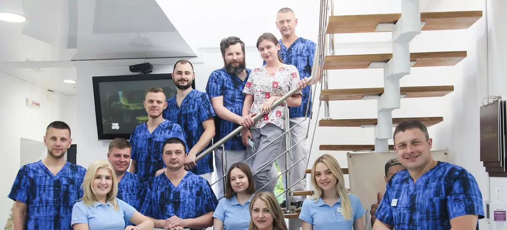
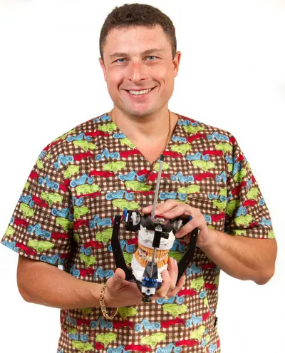
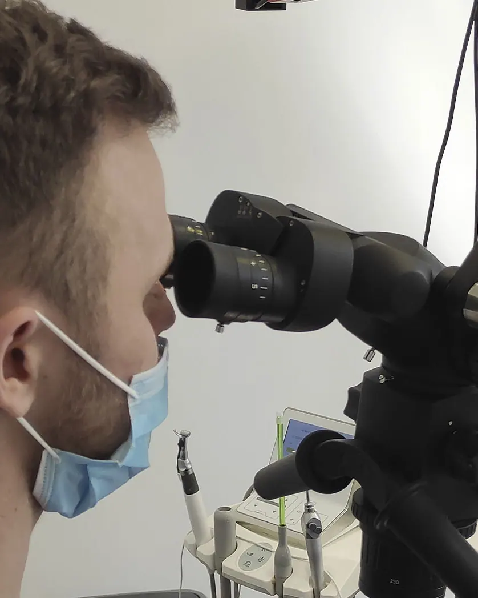

Болгарська, 4
м. Львів, вул. Болгарська, 4
+38 068 431-51-52Тут: стоматологічний мікроскоп, дві технічні лабораторії, рентген-кабінет.
Графік роботи уточнюйте телефоном.
Лікування, протезування, ортодонтія, імплантація і дитячий прийом у двох клініках — кожного лікаря особисто відбирав засновник, Сергій Копитко.

Ціна в кожному рядку — з чинного прейскуранта клініки.
Пломба від 1 400 ₴
Металокерамічна коронка 3 800 ₴
Консультація ортодонта 700 ₴
Імплант Ітерум 13 000 ₴
Консультація дитячого лікаря 300 ₴
Для дітей, 2 години 7 000 ₴
Запишіться в клініку, ближчу до вас:
Прейскурант дійсний з 1 вересня 2026 року. Копитко Сергій Олександрович

Кожного лікаря особисто відбирав власник клініки, перевіряючи професійні якості майбутніх представників Стоматологічної клініки Доктора Копитко.
Наша клініка — це якісне обслуговування за демократичною ціною, підкріплене особистою гарантією засновника.
Копитко Сергій Олександрович Засновник і головний лікар, стоматолог вищої категорії, стаж 24 роки
Гортайте вбік, щоб побачити всіх лікарів.
Стаж — як вказано на сайті клініки. Сторінки лікарів (Розділ у розробці)

м. Львів, вул. Болгарська, 4
+38 068 431-51-52Тут: стоматологічний мікроскоп, дві технічні лабораторії, рентген-кабінет.
Графік роботи уточнюйте телефоном.
м. Львів, вул. Кортумівка, 5
+38 067 809-67-65Тут: технічна лабораторія, рентген-кабінет.
Графік роботи уточнюйте телефоном.
Зручніше написати? zubik.lviv@ukr.net